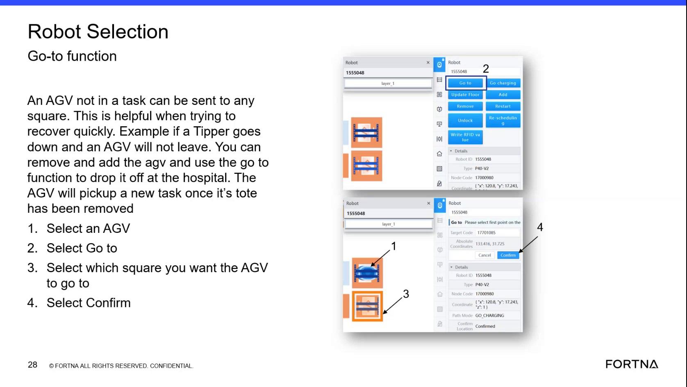

| Procedure ID | proc_move_an_agv_to_another_map_location_using_the_go_to_function_v1 |
|---|---|
| Title | Move An AGV To Another Map Location Using The Go-to Function |
| Procedure Type | operation |
| Primary Role | operator |
| Support Safe | Yes |
| Validation Status | needs_sme_review |
| Merge Status | source_finalized |
Use the Go-to function in the robot selection interface to send an AGV that is not currently in a task to a selected square or map cell, avoiding the need to physically push the AGV.
Use when an AGV is not currently in a task and needs to be repositioned to another map location. The source describes a green AGV state as ready to execute something but not currently having a task, and identifies the Go-to function as useful for quick recovery and repositioning.
Responsible role: operator
Instruction:
Identify an AGV that is not in a task. Confirm the AGV is in the green state described by the source as ready to execute something but not currently having a task.
Expected result:
An eligible AGV is identified for repositioning.
Screens / Images:

Stop or Escalate If:
Responsible role: operator
Instruction:
Select the AGV in the robot selection area.
Expected result:
The intended AGV is selected in the interface.
Screens / Images:
Stop or Escalate If:
Responsible role: operator
Instruction:
Select the Go to function for the selected AGV.
Expected result:
The interface is ready for destination selection.
Screens / Images:
Stop or Escalate If:
Responsible role: operator
Instruction:
Choose the destination by either entering the target code or clicking a square or cell on the map.
Expected result:
A destination square, cell, or target code is selected for the AGV.
Screens / Images:
Stop or Escalate If:
Responsible role: operator
Instruction:
Select Confirm to send the AGV to the chosen location.
Expected result:
The AGV is dispatched to the selected target location.
Screens / Images:
Stop or Escalate If: